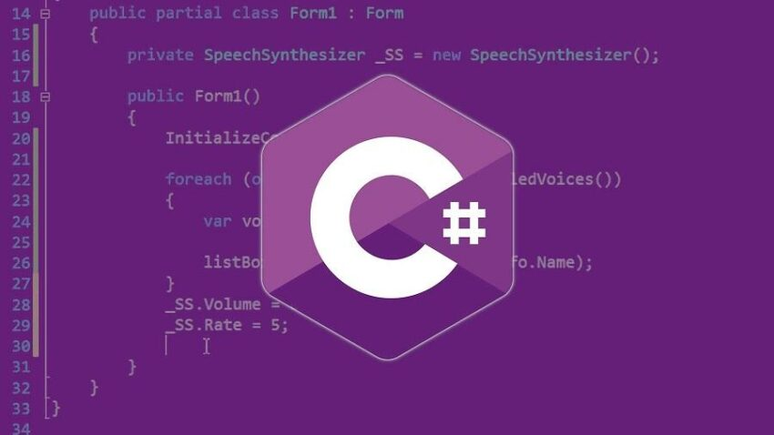
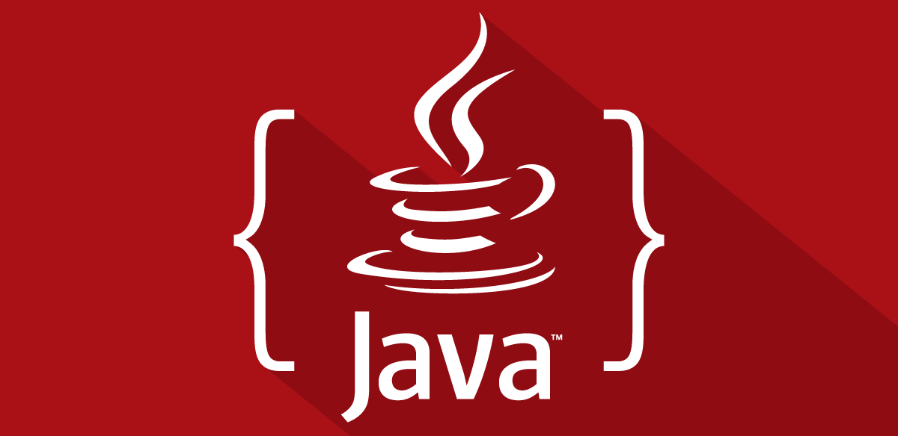
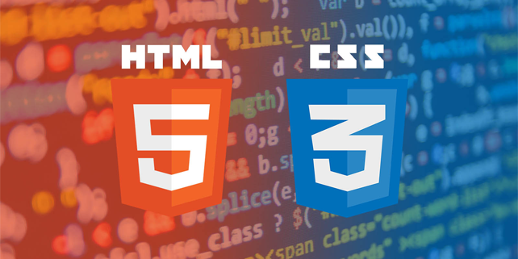

Yazılım Hakkında Her şey
- TÜMÜ /
- JAVA /
- C# /
- MATLAB /
- HTML/CSS
HTML/CSS
HTML NEDİR?
5 Mayıs 2022 - 7 dk okuma süresi

C#
C# Erişim Belirleyicileri (Access Modifiers)
9 Mayıs 2022- 10 dk okuma süresi
JAVA
Java EBOB EKOK Hesaplama
13 Mayıs 2022 - 12 dk okuma süresi

JAVA
Java Sayı Tahmin Oyunu
16 Mayıs 2022 - 10 dk okuma süresi
MATLAB
Atomik Haritalama Tekniği
18 Mayıs 2022 - 8 dk okuma süresi

HTML/CSS
CSS NEDİR?
20 Mayıs 2022 - 5 dk okuma süresi